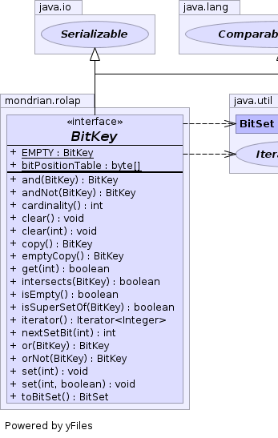
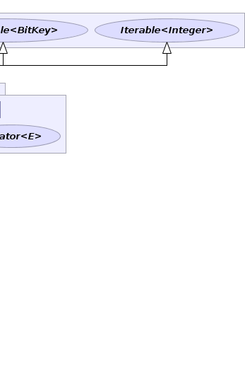

public interface BitKey extends Serializable, Comparable<BitKey>, Iterable<Integer>
Unlike BitSet, the number of bits cannot be changed
after the BitKey is created. This allows us to optimize.
If you have a collection of immutable objects, each of which has a unique positive number and you wish to do comparisons between subsets of those objects testing for equality, then encoding the subsets as BitKeys is very efficient.
There are two implementations that target groups of objects with maximum number less than 64 and less than 128; and there is one implements that is general for any positive number.
One caution: if the maximum number assigned to one of the objects is large, then this representation might be sparse and therefore not efficient.
|  |  |
| Modifier and Type | Interface and Description |
|---|---|
static class |
BitKey.AbstractBitKey
Abstract implementation of
BitKey. |
static class |
BitKey.Big
Implementation of
BitKey with more than 64 bits. |
static class |
BitKey.Factory |
static class |
BitKey.Mid128
Implementation of
BitKey good for sizes less than 128. |
static class |
BitKey.Small
Implementation of
BitKey for bit counts less than 64. |
| Modifier and Type | Field and Description |
|---|---|
static byte[] |
bitPositionTable |
static BitKey |
EMPTY
The BitKey with no bits set.
|
| Modifier and Type | Method and Description |
|---|---|
BitKey |
and(BitKey bitKey)
Returns the boolean AND of this bitkey and the given bitkey.
|
BitKey |
andNot(BitKey bitKey)
Returns a
BitKey containing all of the bits in this
BitSet whose corresponding
bit is NOT set in the specified BitSet. |
int |
cardinality()
Returns the number of bits set.
|
void |
clear()
Sets all of the bits in this BitKey to
false. |
void |
clear(int bitIndex)
Sets the bit specified by the index to
false. |
BitKey |
copy()
Returns a copy of this BitKey.
|
BitKey |
emptyCopy()
Returns an empty BitKey of the same type.
|
boolean |
get(int bitIndex)
Returns the value of the bit with the specified index.
|
boolean |
intersects(BitKey bitKey)
Returns whether this BitKey has any bits in common with a given BitKey.
|
boolean |
isEmpty()
Returns true if this
BitKey contains no bits that are set
to true. |
boolean |
isSuperSetOf(BitKey bitKey)
Is every bit set in the parameter
bitKey also set in
this. |
Iterator<Integer> |
iterator()
An Iterator over the bit positions.
|
int |
nextSetBit(int fromIndex)
Returns the index of the first bit that is set to
true
that occurs on or after the specified starting index. |
BitKey |
or(BitKey bitKey)
Or the parameter
BitKey with this. |
BitKey |
orNot(BitKey bitKey)
XOr the parameter
BitKey with this. |
void |
set(int bitIndex)
Sets the bit at the specified index to
true. |
void |
set(int bitIndex,
boolean value)
Sets the bit at the specified index to the specified value.
|
BitSet |
toBitSet()
Returns a
BitSet with the same contents as this BitKey. |
compareTostatic final byte[] bitPositionTable
void set(int bitIndex, boolean value)
void set(int bitIndex)
true.boolean get(int bitIndex)
true if the bit with the index bitIndex
is currently set in this BitKey; otherwise, the result
is false.void clear(int bitIndex)
false.void clear()
false.boolean isSuperSetOf(BitKey bitKey)
bitKey also set in
this.
If one switches this with the parameter bitKey
one gets the equivalent of isSubSetOf.bitKey - Bit keyBitKey and(BitKey bitKey)
bitKey - Bit keyBitKey andNot(BitKey bitKey)
BitKey containing all of the bits in this
BitSet whose corresponding
bit is NOT set in the specified BitSet.boolean isEmpty()
BitKey contains no bits that are set
to true.boolean intersects(BitKey bitKey)
Iterator<Integer> iterator()
int nextSetBit(int fromIndex)
true
that occurs on or after the specified starting index. If no such
bit exists then -1 is returned.
To iterate over the true bits in a BitKey,
use the following loop:
for (int i = bk.nextSetBit(0); i >= 0; i = bk.nextSetBit(i + 1)) {
// operate on index i here
}IndexOutOfBoundsException - if the specified index is negativefromIndex - the index to start checking from (inclusive)int cardinality()